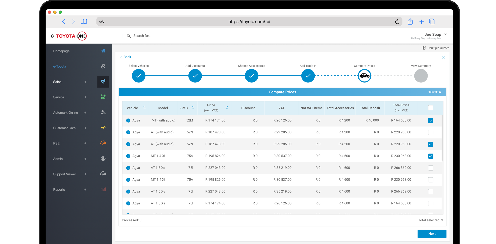
Empowering choice through flexible vehicle options
The KINTO model allows customers to borrow vehicles while paying fixed monthly instalments over a set period. The multiple quotes feature enables customers to select from curated quote options displaying different vehicle models, accessories, and discounts for informed decision-making.
A shipped, live feature on E-Toyota One.
My Impact
Sales consultants creating KINTO quotes struggle to efficiently present multiple options to customers due to its repetitive, time-consuming and manual process. Starting each quote from scratch with only minor variations diverts focus from selling to admin work, causing frustration and reducing productivity.
The Team
Arriving at Toyota, I found design was treated as a novelty rather than standard practice. I led building design infrastructure from zero while pioneering internal processes and educating cross-functional partners on design thinking methodologies.
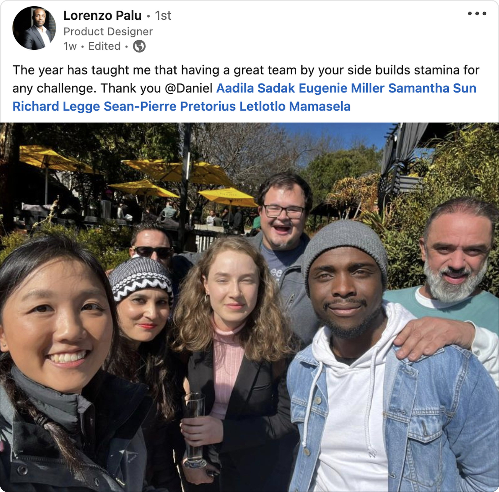
Reviewing the Current State
Before proposing changes, I reviewed the current state of the Toyota platforms to understand existing patterns, inconsistencies, and pain points across the ecosystem. The E-Toyota One platform gave me cognitive overload, and the current state of all the Toyota platforms showed inconsistency in brand and identity. I also mapped an organogram to understand the context of how Toyota operates internally.
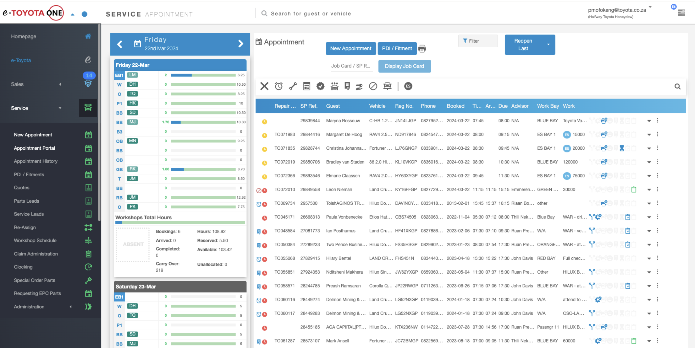
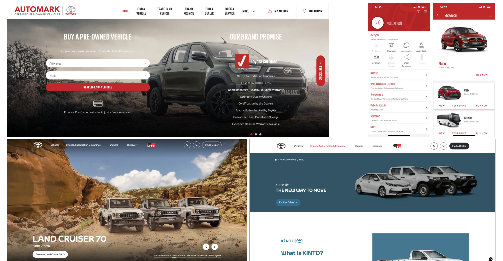
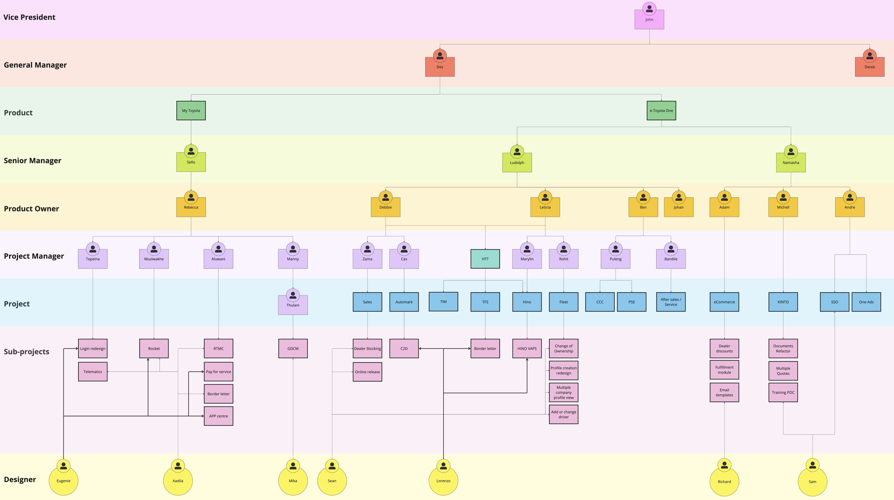
Conceptualising the Price Comparison Tool
After doing a general analysis, I started to dive deeper into the requirements of the price comparison tool. I recognised dealer demand for simultaneous quote comparisons. I conducted dealer visits and focus groups to obtain insights that would reshape a platform previously limited to single quote creation.
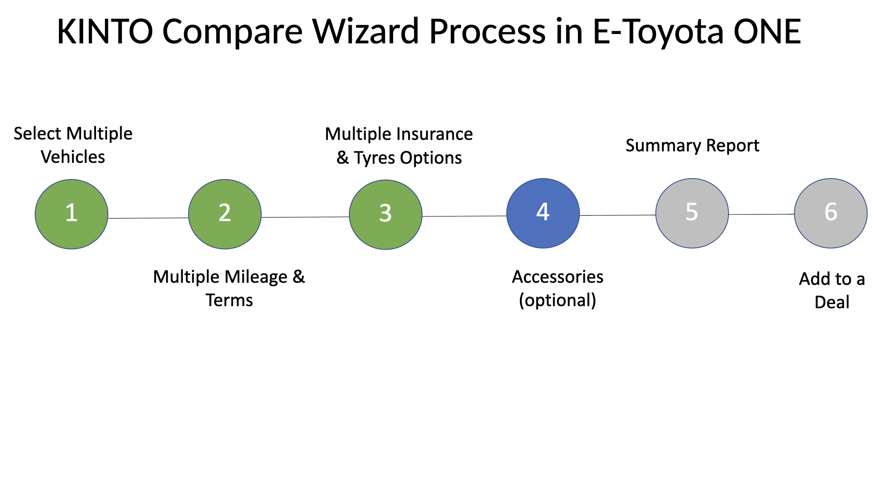
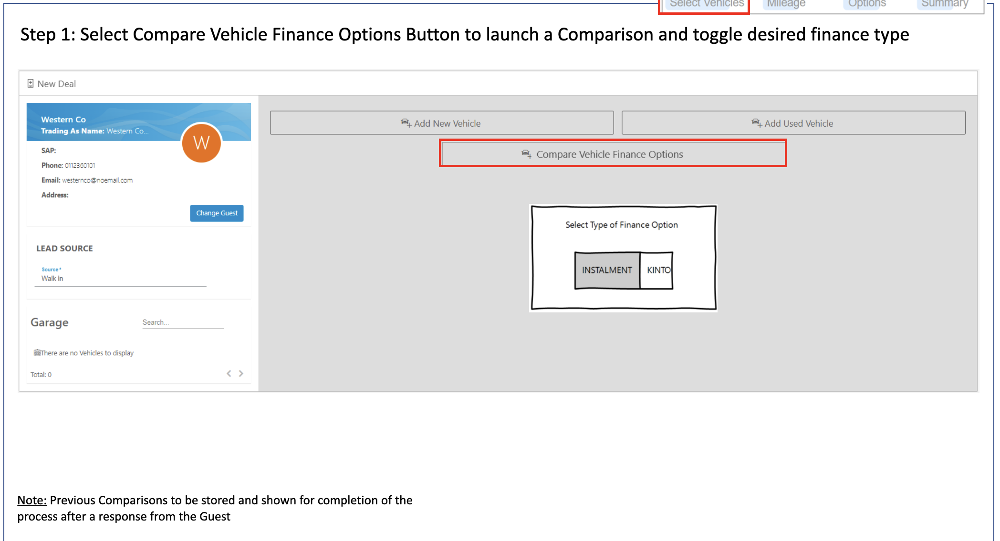
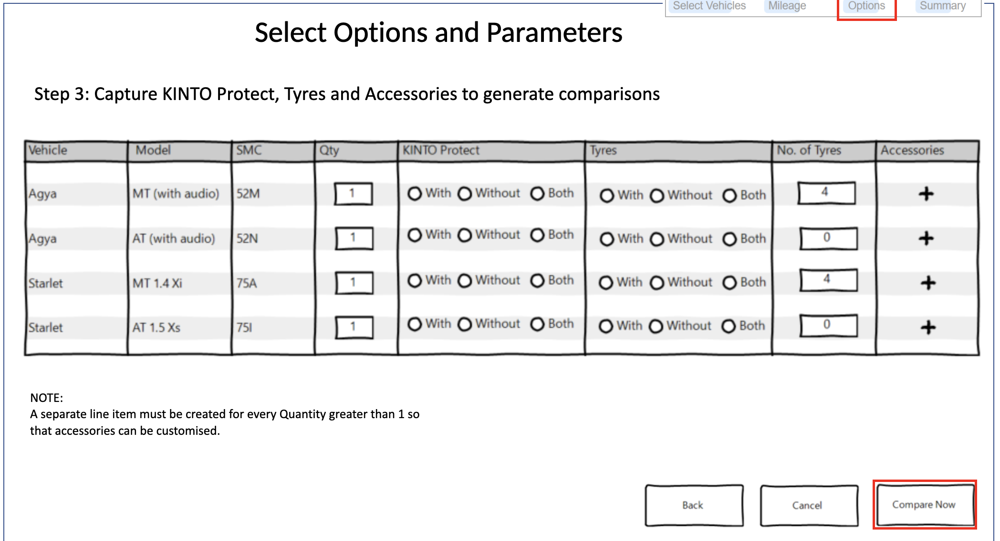
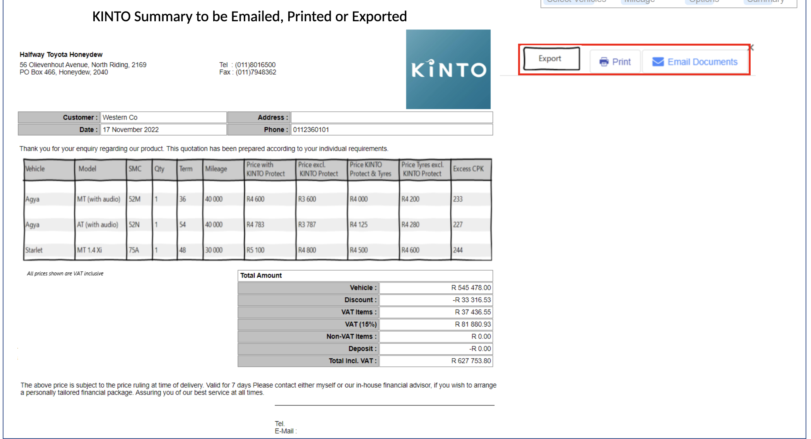
A Unified Digital Identity
The initial phase focused on architecting a comprehensive design system for the E-Toyota One platform. Before creating the designs, the team and I had to first build a scalable component library establishing a unified visual language, applying atomic design principles to ensure consistent integration across the platform ecosystem.
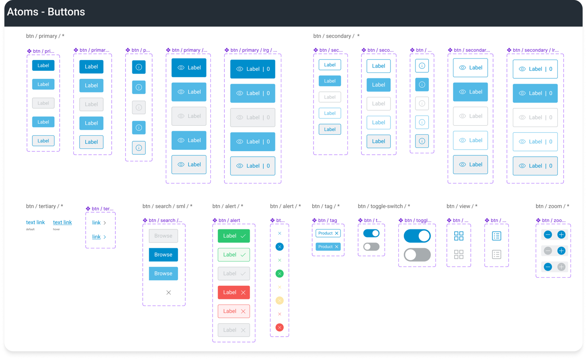
Prototype-first Approach
Given the complexity and Toyota's unfamiliarity with Figma, I adopted a prototype-first methodology, helping stakeholders understand ideas and the value of collaborative design tools.
From Concept to Reality
Business analysts, product owners and developers collaborated through iterative prototypes I built, which was then broken up into distinct user stories using Agile methodologies. At times I juggled dual roles as designer and analyst when business analysts were unavailable, wearing many hats throughout the process. As a result, I created a workflow diagram to better understand my role and responsibilities.
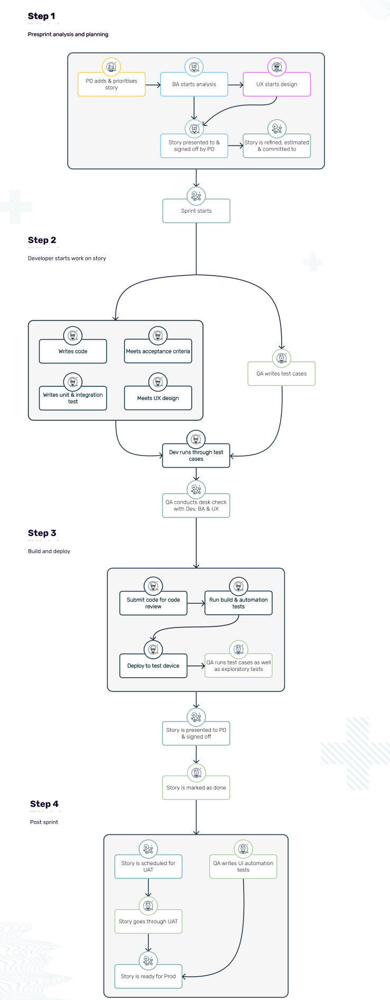
Desk Check Alignment
Regular desk-checks with developers verified alignment between their work and the prototype. Figma screens and prototypes were carefully versioned, keeping developers focused on approved components. Design acceptance criteria ensured accurate alignment throughout.
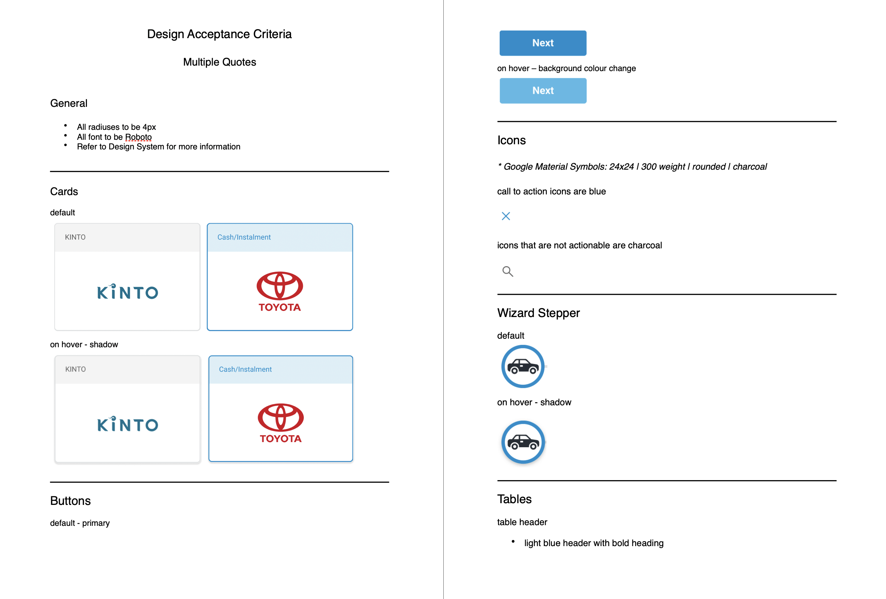
Training and Feedback
I conducted multiple workshops with KINTO dealers before release, introducing the new feature and obtaining feedback. The overall feedback sentiment proved positive.
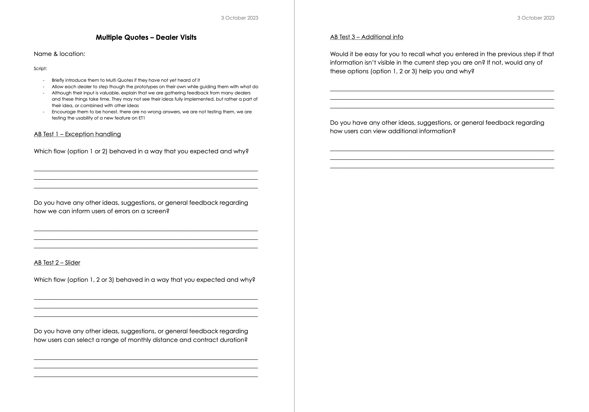
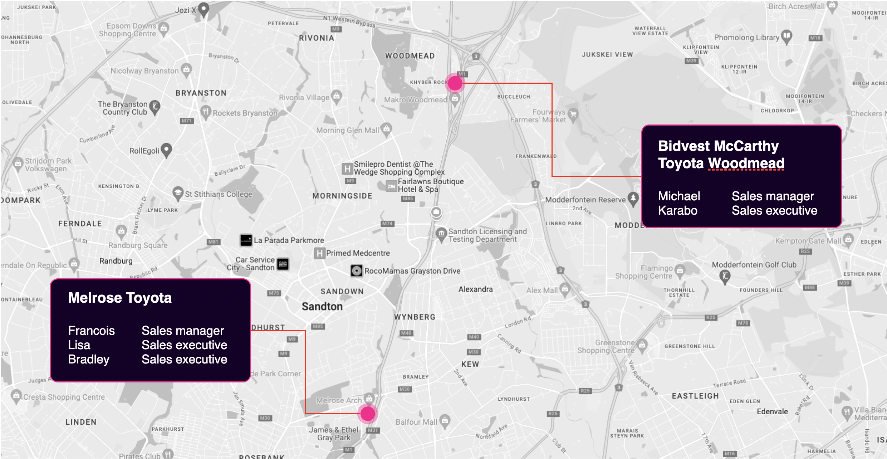
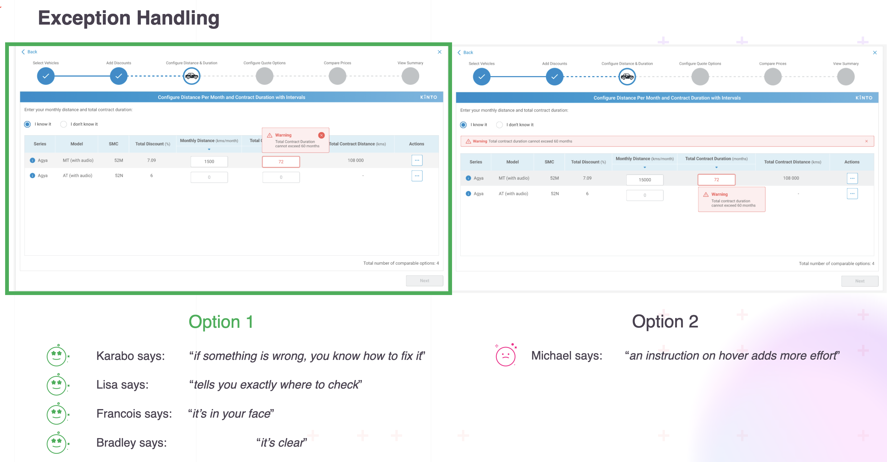
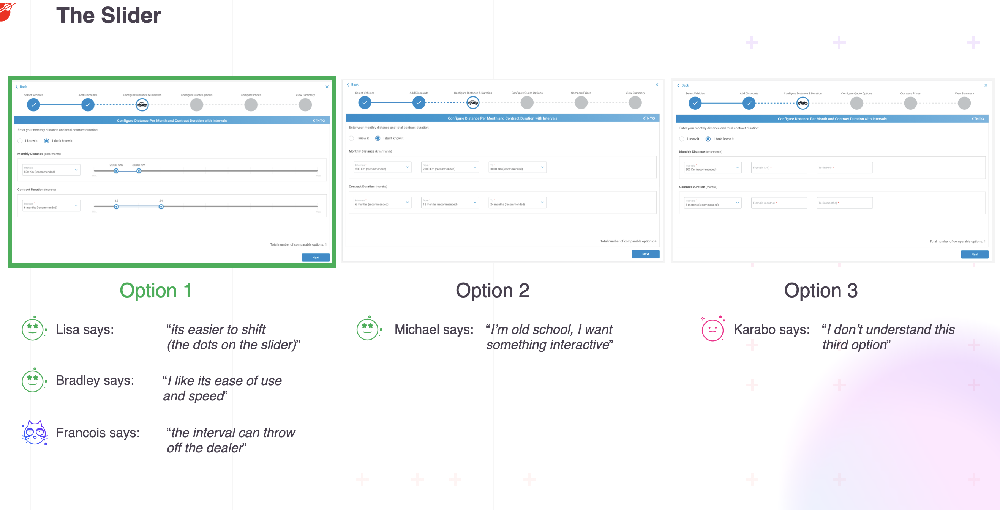
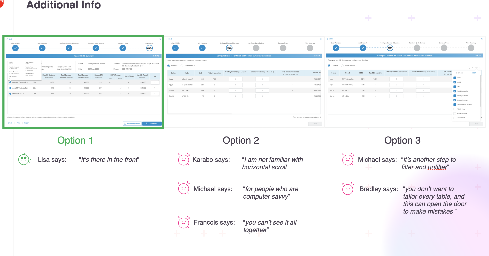
Reflecting on the Journey
Toyota's minimal design methodology exposure created a challenge: the absence of initial user research including competitive analysis and persona development. My future aspiration is to advocate these approaches to enhance the value proposition.